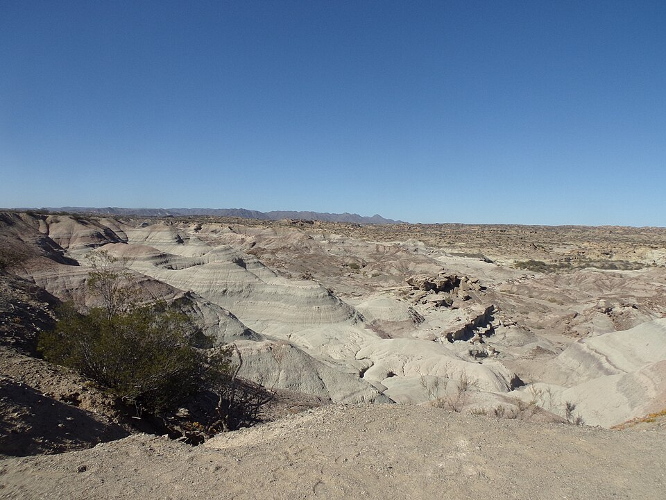
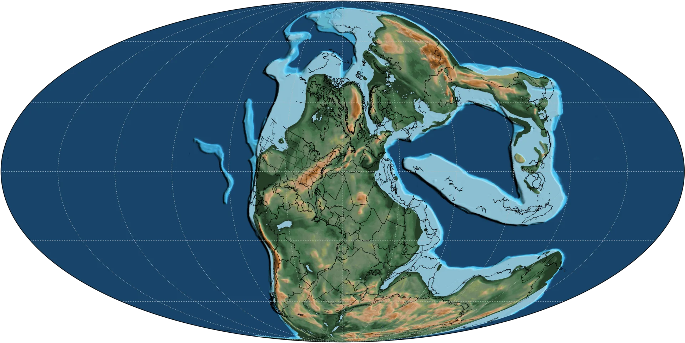
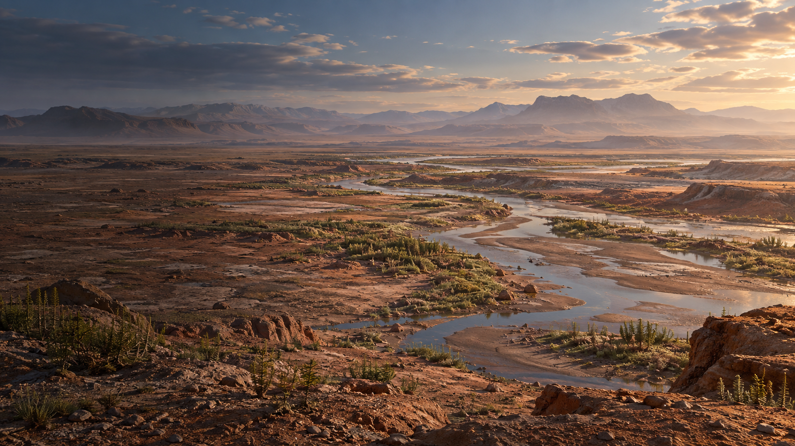
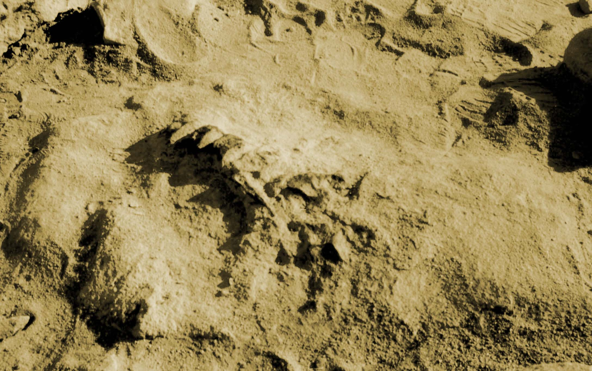
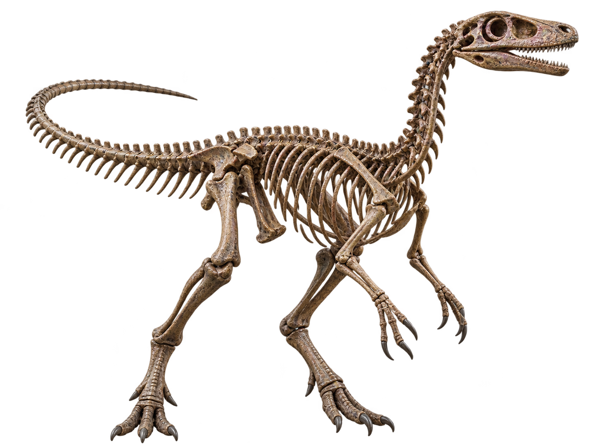
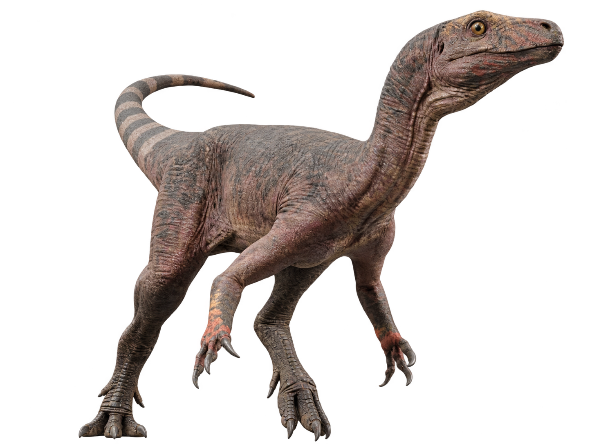
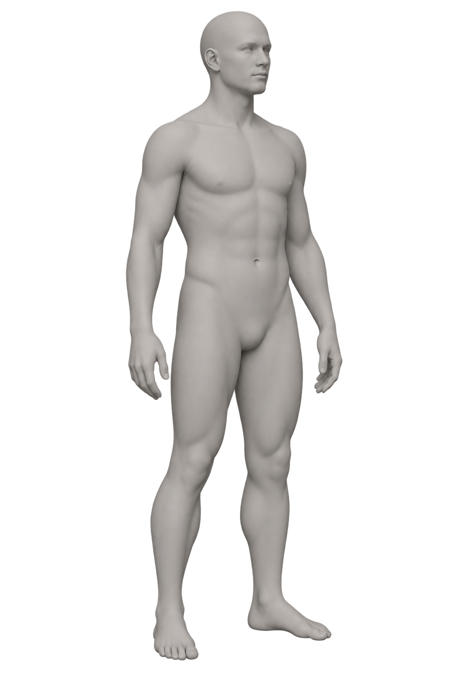

É fácil olhar para o mundo de hoje e chamá-lo de normal.
Como se os continentes sempre tivessem estado aqui.
Como se este clima fosse permanente.
Como se nós tivéssemos chegado ao resultado final.
A natureza raramente trabalha com resultados finais.

Ischigualasto · paisagem atualSAN JUAN · ARGENTINA · PRESENTE
Ischigualasto
Hoje, parece imóvel.
Rocha, poeira, erosão — uma paisagem que sugere permanência.
É uma boa ilusão.
As camadas expostas aqui registram fragmentos de um mundo muito mais antigo.
Não o mundo inteiro.
A geologia nunca é tão generosa.
Nota
A paisagem atual de Ischigualasto não é a paisagem do Triássico. O que vemos hoje resulta de milhões de anos de deposição, soterramento, transformação e erosão.
≈ 251,9 MILHÕES DE ANOS
O Triássico não começou do zero. Começou do que restou.
No fim do Permiano, a maior extinção em massa conhecida havia transformado profundamente a vida na Terra.
Os sobreviventes herdaram o planeta.
Isso não significa que herdaram estabilidade.
A vida continuou. Só não voltou ao que era.
Nota
A recuperação dos ecossistemas ocorreu em ritmos diferentes. O início do Triássico ainda foi marcado por fortes perturbações ambientais.

Reconstrução paleogeográfica provisóriaUM PLANETA DIFERENTE EXIGE OUTRO MAPA
Um continente. Não um único mundo.
A maior parte das terras emersas estava reunida em Pangeia.
No mapa, parece simples.
Na realidade, distâncias continentais enormes, circulação atmosférica e forte sazonalidade criavam condições muito diferentes entre regiões.
Unir os continentes nunca significou uniformizar a natureza.
Nota
Reconstrução paleogeográfica aproximada. Posições continentais são sustentadas por evidências geológicas e paleomagnéticas; costas, relevo e detalhes regionais envolvem reconstrução.

Seco não significa vazio.
Grandes regiões do interior de Pangeia experimentavam condições áridas ou semiáridas e forte sazonalidade.
Mas imaginar o Triássico como um deserto interminável seria conveniente demais.
Rios existiam. Chuvas chegavam. Planícies inundavam.
O ambiente mudava — às vezes depressa.
Água muda as regras. Mesmo quando não fica por muito tempo.
Rios e planícies de inundação alteravam a paisagem, transportavam sedimentos e criavam novas condições para a vida.
Uma região seca não precisava permanecer seca.
Um rio não precisava permanecer no mesmo lugar.
Estabilidade é uma ideia confortável. A geologia oferece poucas garantias.
Pangeia nunca foi uma paisagem só.
Onde água, clima e solo permitiam, a vegetação respondia.
Regiões mais úmidas coexistiam com áreas abertas, sazonais e secas.
Tudo dentro do mesmo supercontinente.
Pangeia estava unida geograficamente. A natureza não recebeu o memorando.
TRIÁSSICO SUPERIOR · HÁ POUCO MAIS DE 230 MILHÕES DE ANOS
Em algum momento, eles começaram.
Seria conveniente conhecer o primeiro dinossauro.
A espécie.
O lugar.
A data.
Não conhecemos.
Os fósseis mais antigos bem sustentados aparecem no Triássico Superior.
Mas existe uma diferença importante entre o primeiro dinossauro que existiu e o primeiro que tivemos a sorte de encontrar.
Nota
O registro fóssil é incompleto. Os fósseis mais antigos conhecidos estabelecem uma idade mínima para a presença dos dinossauros — não o instante exato em que o grupo surgiu.

Fossilizar já é improvável. Ser encontrado é pedir ainda mais sorte.
Um organismo precisa morrer nas condições certas, ser enterrado, escapar da destruição, permanecer preservado por milhões de anos...
e depois ser exposto onde alguém possa encontrá-lo.
É com esse arquivo incompleto que reconstruímos mundos inteiros.
Não é pouca informação. Só não é toda ela.
Eoraptor lunensis
Um animal reduzido ao que permaneceu.
Material esqueletal excepcionalmente informativo revelou um pequeno dinossauro bípede de Ischigualasto.
Os ossos estabelecem limites.
Proporções. Articulações. Anatomia.
Mas eles não escolhem a pele, a cor ou os detalhes que colocamos sobre o animal.
É aqui que evidência começa a encontrar interpretação.
Nota
Representação esquelética do projeto. A postura apresentada é uma reconstrução baseada na anatomia conhecida e não uma posição preservada em vida.

Ossos são evidência.
O animal completo é uma reconstrução.
Entre uma coisa e outra existem anatomia, comparação, hipóteses...
e espaço para estarmos errados.
Eoraptor lunensis
Um dos primeiros capítulos conhecidos da história dos dinossauros.
Há cerca de 230 milhões de anos, Eoraptor viveu onde hoje está o noroeste da Argentina.
Era pequeno, bípede e anatomicamente próximo das primeiras grandes ramificações da evolução dos dinossauros.
Sua posição exata já mudou conforme novas análises foram feitas.
O fóssil permaneceu o mesmo.
Nossa interpretação, não.
Nota científica
Eoraptor já foi interpretado de maneiras diferentes dentro da árvore evolutiva dos dinossauros. Sua posição entre formas próximas à origem dos sauropodomorfos é atualmente bem sustentada por diversas análises, mas relações profundas entre os primeiros dinossauros continuam sendo investigadas.

- PERÍODO
- Triássico Superior
- IDADE
- ≈ 230 milhões de anos
- LOCALIDADE
- Formação Ischigualasto
San Juan · Argentina - LOCOMOÇÃO
- Bípede
- DIETA
- Incerta
- POSIÇÃO EVOLUTIVA
- Frequentemente recuperado entre os sauropodomorfos mais basais.
TAMANHO EM PERSPECTIVA
A palavra “dinossauro” faz a imaginação crescer.
O animal, nem sempre.
Eoraptor estava muito distante dos gigantes que apareceriam mais tarde na história dos dinossauros.
Nesta reconstrução, ele é mostrado com aproximadamente 1,2 metro de comprimento ao lado de uma pessoa de 1,70 metro.
Pequeno?
Comparado ao que viria depois, certamente.
Irrelevante é outra questão.

Comparação visual aproximada. O holótipo de Eoraptor foi originalmente descrito com cerca de 1 metro de comprimento. A medida de 1,2 m representa a escala adotada nesta reconstrução gráfica e não uma medição direta confirmada para todos os indivíduos da espécie.
≈ 201,4 MILHÕES DE ANOS
E então, as regras mudam outra vez.
O Triássico termina durante outra grande crise biológica.
Um episódio de extinção em massa coincide estreitamente com enorme atividade vulcânica associada à abertura inicial do Atlântico.
Os mecanismos ainda são investigados em detalhe.
O resultado, não.
Muitas linhagens desapareceram. Outras permaneceram.
A vida continuou novamente — não porque o mundo tivesse se tornado mais seguro, mas porque alguma coisa conseguiu sobreviver.
Aqui termina o Triássico.
O que acontece depois pertence ao próximo capítulo.